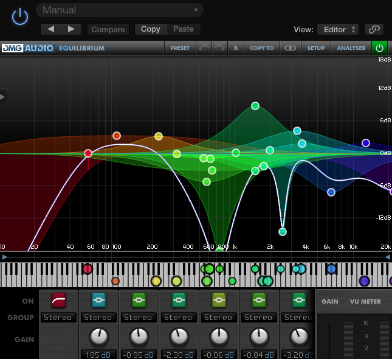

Pascasio Ciro PageNum. 3
Videos
Home
Music
Videos
Music Productions
Life Saving Hot Keys
Pgm2
Please check my youtube videos
Here's some interesting media enjoy:
My Youtube Webpage
Music Production Videos
Instructionals

History Videos
Technology
Music Theory